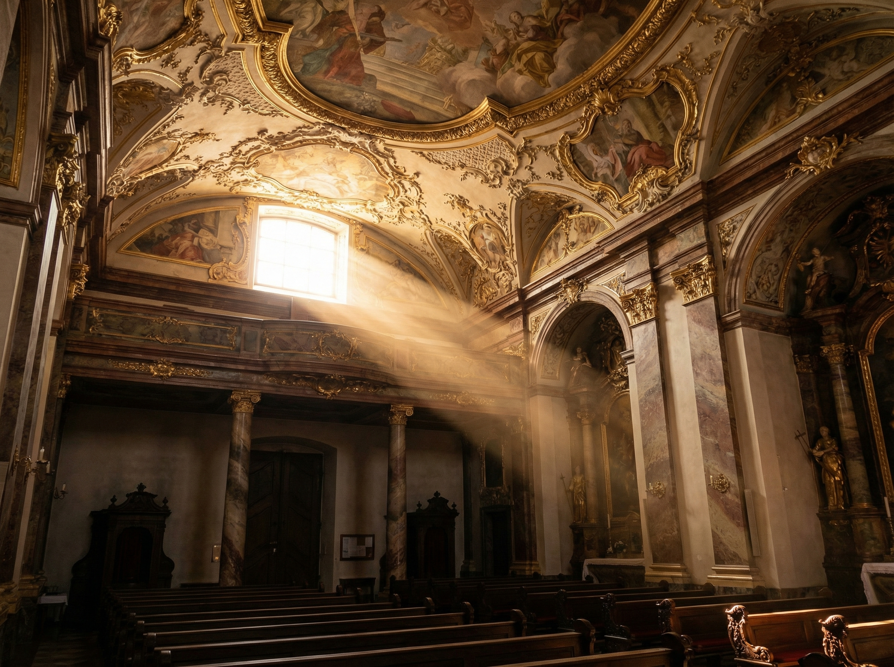

1
Asamkirche

A masterpiece of late Baroque architecture packed into a tiny space, only 8 by 27 meters. Built in the 1700s by the Asam brothers as their private chapel, they bypassed strict church building codes and went wild with Rococo decoration.
Look for the Asam window above the altar. This hidden window lights up the crucifix from behind, creating an almost theatrical effect. The ceiling fresco creates an optical illusion of endless height.
The brothers lived next door. You can spot a window from the priest's house looking directly onto the high altar, which allowed Egid Asam to see the altar from his bed.
Insider Tip
The church opens at 9 AM. It is best viewed when quiet to appreciate the overwhelming detail without crowds.